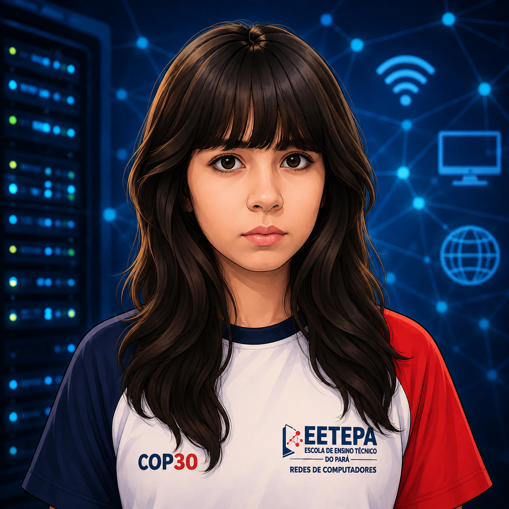
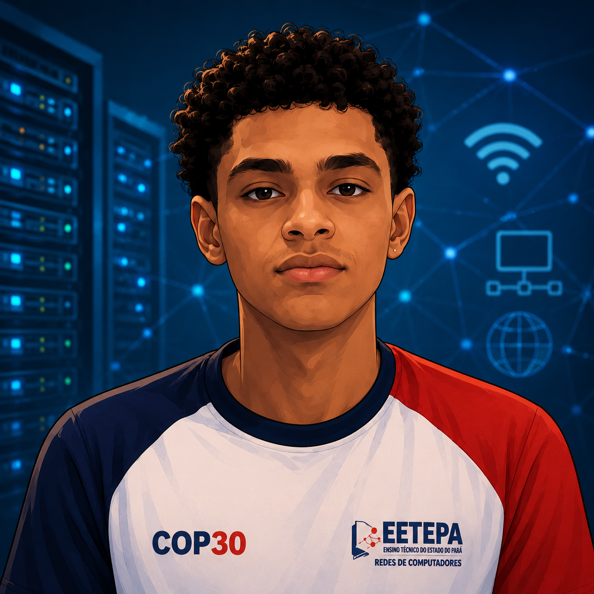
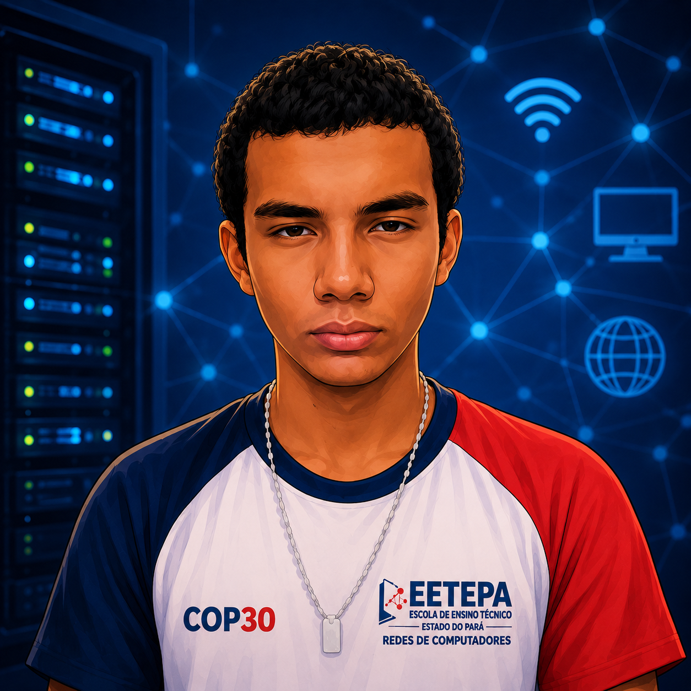
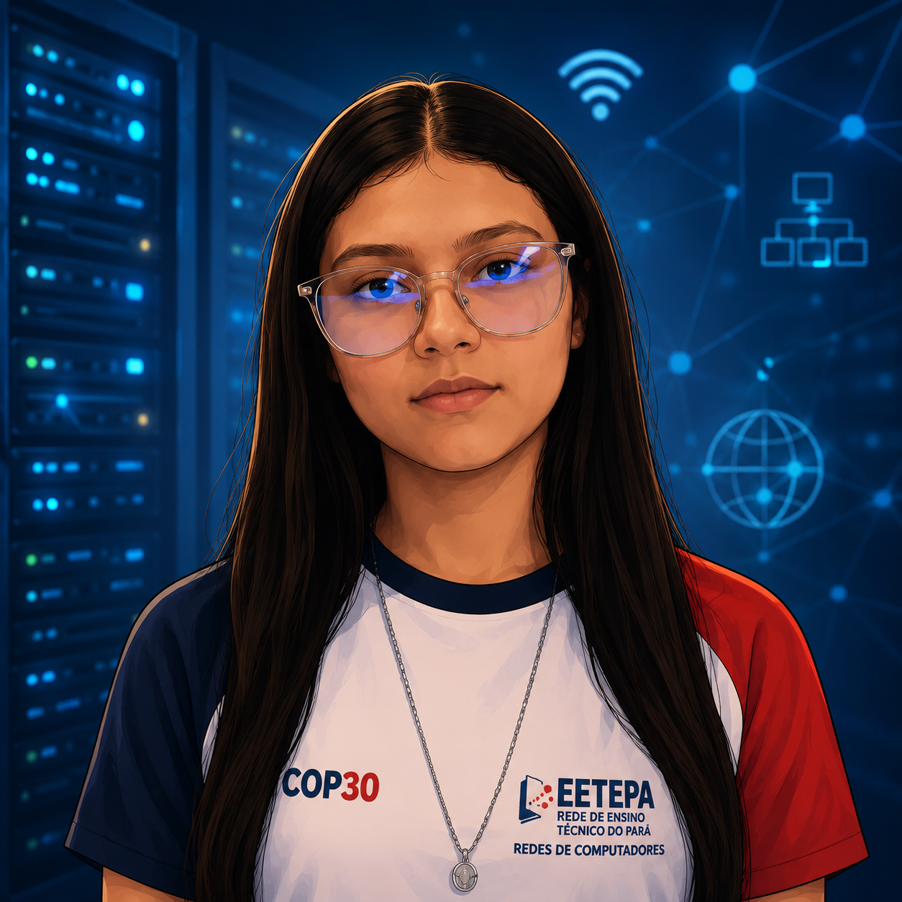

Feira de Ciências 2026
O prazo final para a entrega do escopo dos projetos das equipes de redes foi prorrogado para a próxima segunda-feira. Não deixem de enviar!
Registre problemas nos laboratórios de redes e participe das votações de líderes.
O **Portal Escolar** foi desenhado como a plataforma unificada para comunicação interna e suporte operacional dos laboratórios de informática da EETEPA Vilhena Alves.
Técnicos respondem em até 24 horas.
Encontrou um computador sem internet ou periférico quebrado? Avise o suporte abrindo um chamado técnico abaixo.
Participe de forma democrática na escolha do representante da turma de Redes 3º Período.
Alunos podem solicitar materiais, cabos, conectores ou switches para uso em projetos práticos escolares.
⚠️ Atenção: Ferramentas como alicates de crimpagem e switches devem ser devolvidos ao final do projeto pedagógico.
Perdeu alguma aula? Acesse os resumos, laboratórios práticos e materiais de apoio das últimas aulas ministradas.
Guia passo a passo descrevendo o padrão de crimpagem T568A e T568B, com diagramas de cores e dicas de testes físicos.
Arquivo de laboratório prático configurando roteamento estático entre três roteadores e sub-redes distintas. Inclui roteamento padrão.
Tabela de referência rápida das portas e serviços fundamentais (HTTP, HTTPS, SSH, FTP, DNS, DHCP) e seu funcionamento em redes locais.
Mantenha-se informado sobre as datas importantes da EETEPA Vilhena Alves.
O prazo final para a entrega do escopo dos projetos das equipes de redes foi prorrogado para a próxima segunda-feira. Não deixem de enviar!
Nesta quarta-feira, a partir das 14h, o Laboratório 1 estará fechado para a instalação do novo simulador de redes e ajustes de cabeamento físico.
Os alunos que necessitam emitir a 1ª ou 2ª via da carteira estudantil devem procurar a coordenação acadêmica para retirar a declaração de matrícula assinada.
Alunos do 3º período de Redes da EETEPA Vilhena Alves responsáveis pelo desenvolvimento do Portal Escolar.

Gerente de Ideias Maria Eduarda Ferreira
Designer Carlos Daniel Santos
Construtor HTML João Guilherme Seabra
Estilista CSS Fernanda Kristhyna Costa